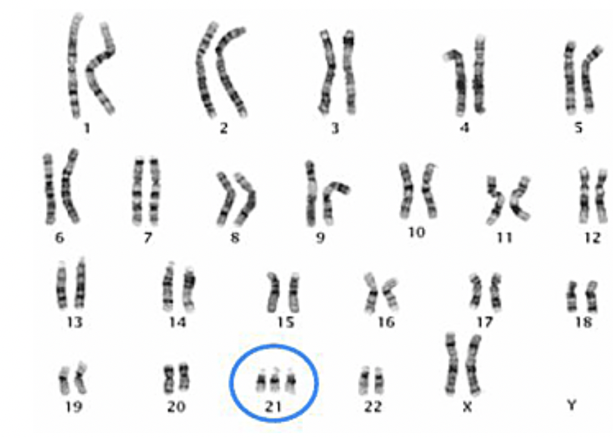
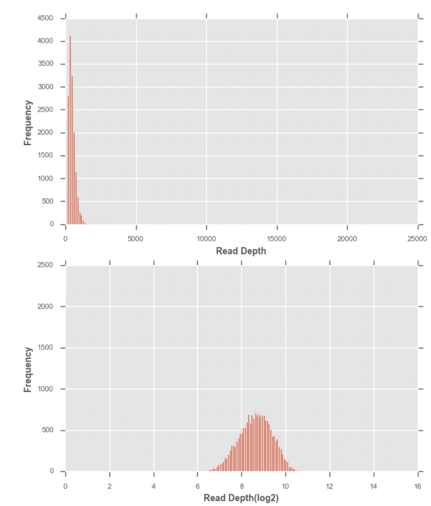
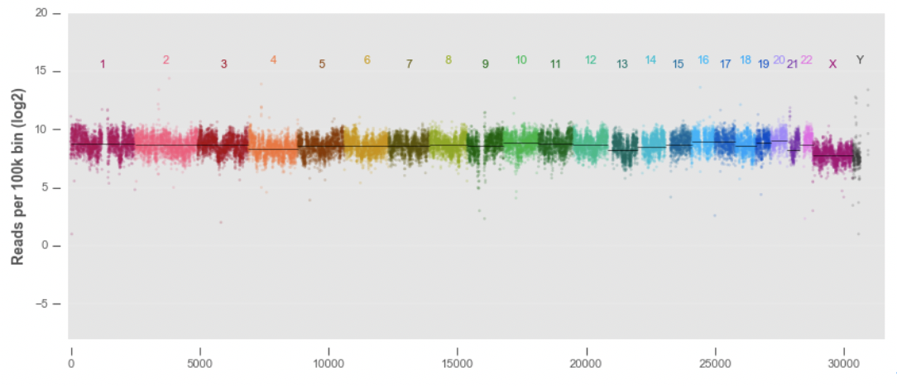

염색체 이상 찾기¶
얼마전 둘째를 임신 했을때 의사로부터 태아의 기형 선별 검사(screening)에서 고위험군으로 분류되었으니 양수검사를 한번 해보라고 했다.
한 세대에서 다음 세대로 유전자가 전달되는 과정에서 여성의 경우 태어나면서 난자 세포가 모두 만들어지지만 재결합율이 높은 난자는 생존률이 높은 태아를 출산할 확률이 높기 때문에 가임기 초기에 배출되지만 산모의 나이가 들수록 재결합율이 낮은 난자를 배출하고 그 결과 산모의 나이가 증가할 수록 염색체 이상으로 인한 질병의 발생 가능성이 커진다.
남자의 경우에는 염색체의 재결합률과는 영향을 미치지 않지만 아버지의 나이가 증가할 수록 새로운 돌연변이를 자식에게 물려주며 1년에 2개씩 증가하는 것으로 알려져 있다. 이러한 정자 형성 과정에서의 돌연변이는 유적적 질환의 발병 가능성을 증가 시키게 되어 자폐증이나 정신분열증을 보이는 아이를 출산하는 것으로 알려져 있다. 약 40세의 남성의 경우 정자 형성 시 80여개의 돌연변이를 가지게 된다.
따라서 염색체이상에 따른 질병의 가능성은 엄마의 나이와 밀접한 관계가 있으며, 양수검사는 염색체 이상에 따른 다운증후군, 에드워드 증후군 등을 가지고 있는지 태아를 둘러싸고 있는 양수에 존재하는 태아의 유전자를 검사하는 방법이다.
양수 검사는 산모의 피만 뽑으면 되는 선별 검사와 달리 산모 배에 바늘을 꽂아서 시행하는 침습 검사로 선별 검사에 비해 비용이나 부작용이 존재한다. 그렇기 때문에 1차로 스크리닝(선별)을 한 후 그 다음 단계인 진단(확진) 검사를 할 지 결정하는 것이다.
일반적으로 임신 4주 이후부터 산모의 혈액속에는 태아와 산모의 DNA가 공존하게 되는데 이때 정상적인 세모안에 DNA가 아니라 조각난 형태로 혈액속에 존재(cfDNA)하게 된다. 임신 10주 이후에는 평균 10%가 cfDNA이고 나머지 90%는 모체에서 유래한 cfDNA이다.
바로 이런 cfDNA를 읽어 시퀀싱을 수행하면 염색체가 1개 더 존재함으로써 발생하는 다운증후군 등의 유전질환을 검사할 수 있게 된다. 엄마는 21번 염색체가 정상적으로 2개 존재하나 태아의 경우 3개가 존재(trisomy)하는 경우 태아는 다운증후군에 걸리게 된다.
{kind=link}
21번 염색체를 시퀀싱한 결과 데이터 생산량이 정상 염색체인 1번과 비교해서 더 많이 생산되었다면 이는 21번 염색체가 3염색체성(trisomy)이라고 할 수 있다. 전체 DNA에서 아기 DNA가 10%, 엄마 DNA가 90%인 경우 trisomy인 염색체인 경우 정상인 염색체 비해서 5%정도 더 생산량이 늘어나게 되는 것이다. 산모의 혈액을 통해 하는 검사를 비침습적 산전 검사(Noninvasive Prenatal Testing, NIPT)라고 한다.
Note
- 이번 장을 끝마치면 당신은 아래의 3가지에 대해서 배울 수 있다.
- NGS를 이용한 염색체 수 이상을 확인하는 방법
- 유전체 데이터를 보정하는 방법
- 염색체수 이상 정보를 시각화 하는 방법
태어날 아기에 대한 유전자 검사 방법 중 하나인 NIPT는 위험없이 유전자를 통해 태아의 유전적인 질환을 미리 알아낼 수 있다는 커다란 장점이 있다. 이번 장을 통해서 태어날 아기를 미리 만나보도록 하자.
염색체별 생산량 측정¶
유전체 데이터에서 양적인 데이터를 이용하여 염색체의 개수를 알아보도록 한다. 양적인 데이터(생산량)는 커버리지(coverage) 또는 (depth)라고 부르며 NGS의 BAM파일을 통해 계산할 수 있다.
1000 Genomes Project의 남성과 여성 샘플의 BAM 파일을 각각 다운로드한다. 여기서는 지노타입 정보는 사용하지 않는다. NA19474 샘플은 아프리카 케냐의 루히아족 여성 샘플이다.
$ wget ftp://ftp.1000genomes.ebi.ac.uk/vol1/ftp/phase1/data/NA19474/alignment/NA19474.mapped.ILLUMINA.bwa.LWK.low_coverage.20101123.bam
우리가 보고하는 하는 커버리지는 염색체별 커버리지이다. 염색체별로 하나의 커버리지를 사용하는 경우 너무 큰 영역의 데이터가 하나의 값으로 표현되기 때문에 염색체를 특정 사이즈(bin)로 나누어 커버리지를 구한다.
wget http://hgdownload.soe.ucsc.edu/goldenPath/hg19/bigZips/hg19.chrom.sizes
cat hg19.chrom.sizes
chr1 249250621
chr2 243199373
chr3 198022430
chr4 191154276
chr5 180915260
chr6 171115067
chr7 159138663
chrX 155270560
chr8 146364022
chr9 141213431
chr10 135534747
chr11 135006516
chr12 133851895
chr13 115169878
chr14 107349540
chr15 102531392
chr16 90354753
chr17 81195210
chr18 78077248
chr20 63025520
chrY 59373566
chr19 59128983
chr22 51304566
chr21 48129895
염색체별로100kbp의 bin 사이즈로 나누고 각 bin 영역에 해당하는 커버리지를 구한다. 염색체의 각 길이를 UCSC에서 다운로드 한 후 bedtools의 makewindows 명령어를 이용하여 원하는 bin 사이즈로 나눈다. 21번 염색체로 총 길이가 48,129,895bp에 달하며 이를 100kb로 나누면 482개의 bin으로 나뉜다.
bedtools makewindows -g hg19.chrom.sizes -w 100000 > genome.bins
cat genomes.bins |grep chr21
chr21 0 100000
chr21 100000 200000
chr21 200000 300000
chr21 300000 400000
chr21 400000 500000
…
chr21 47700000 47800000
chr21 47800000 47900000
chr21 47900000 48000000
chr21 48000000 48100000
chr21 48100000 48129895
각 bin별로 해당 영역의 커버리지를 구한다. 첫번째 컬럼은 염색체 이름과 bin의 start, end의 위치가 각각 나오고 4번째 컬럼에서 해당 bin의 평균 커버리지가 나온다.
bedtools coverage -abam HG00650.mapped.ILLUMINA.bwa.CHS.low_coverage.20101123.bam -b genome.bins > cov.bins
more cov.bins|grep chr21
chr21 15100000 15200000 2715 82869 100000 0.8286900
chr21 15600000 15700000 5625 96870 100000 0.9687000
chr21 16000000 16100000 5644 97097 100000 0.9709700
chr21 16400000 16500000 5457 96800 100000 0.9680000
chr21 16800000 16900000 5560 97874 100000 0.9787400
chr21 17200000 17300000 5591 97610 100000 0.9761000
이제 명령어 부분에서 해야 할 일은 모두 마쳤다. 이렇게 구해진 커버리지 데이터를 이용하여 파이썬 코드를 통해 분석을 시작한다.
coverage = pd.read_table('Qiagen-1.cov.bins',
names=['chrom', 'start', 'end', 'count', 'nzpos', 'length', 'nzratio'])
print(coverage.head())
chrom start end count nzpos length nzratio
0 chr1 67100000 67200000 2308 83 100000 0.00083
1 chr1 134200000 134300000 0 0 100000 0.00000
2 chr1 201300000 201400000 0 0 100000 0.00000
3 chr1 8300000 8400000 14 98 100000 0.00098
4 chr1 16700000 16800000 416 42 100000 0.00042
chromosomes = covs['chrom'].unique()
bp=plt.boxplot([np.log2(bins['count']+1) for chrom, bins in covs.groupby('chrom')], showfliers=True)
plt.xticks(np.arange(1, len(chromosomes) + 1), [c[3:] for c in chromosomes])
plt.xlabel('chromosome')
plt.ylabel('log2 read count/bin')
{kind=link}
로그 취하기¶
사람의 몸무게를 비교하는 경우에는 동일한 의미를 가진 변수이기 때문에 데이터를 있는 그랟로 두고 평균이나 차이를 구해도 문제가 없다. 마찬가지로 지금까지 지노타입 데이터는 0, 0.5, 1, 2라는 이미 데이터가 동일한 의미를 가진 변수였기 때문에 데이터에 대해서 별다른 조정을 취하지 않았다.하지만 커버리지 데이터의 경우 로그를 취해서 데이터가 정규분포를 가지도록 변환하는 작업을 수행한다. 0을 로그 취하면 마이너스 무한대가 나오기 때문에 1을 더해서 오른쪽으로 1씩 이동시킨 후에 로그변환을 취한다. 히스토그램을 보면 이전의 분포가 정규분포로 변환되었음을 알 수 있다.
{kind=link}
염색체 전체 커버리지¶
염색체들까리 이어서 아웃라이어가 어떻게 분포하는지를 점으로 표시하도록 하자
fig, ax = plt.subplots(1, 1, figsize=(10, 4))
chromnameY = 15.5
wiggle_y = .2
SMALL_SIZE = 8
MEDIUM_SIZE = 10
BIGGER_SIZE = 12
plt.rc('font', size=SMALL_SIZE)
for i, (chrom, rows) in enumerate(covs.groupby('chrom_sortkey')):
ax.scatter(rows.index, np.log2(rows['count']),
edgecolor='none', s=4, alpha=0.2,
c=chromcolors[chrom])
center_y = np.median(np.log2(rows['count']).dropna())
ax.plot([rows.index[0], rows.index[-1]],
[center_y, center_y],
c='black',linewidth=0.4)
center_x = np.mean(rows.index)
ax.annotate(chrom[3:].lstrip('0'),
(center_x, chromnameY + (wiggle_y * (i % 2) * 2 - wiggle_y)),
color=chromcolors[chrom], ha='center')
apply_dropped_spine(ax)
ax.set_ylabel('Reads per 100k bin (log2)')
ax.set_xlim(-100, 15800*2)
ax.set_ylim(-8, 20)
각 염색체별로 중간값(median)은 줄로 표시한다. 센트로미어 부분은 데이터가 존재하지 않거나 많이 튀는 것을 확인 할 수 있다. 상염색체(1-22번 염색체)는 크게 차이는 보이지 않으나 21번의 경우 다른 것보다 떨어지는 것을 확인할 수 있다.
{kind=link}